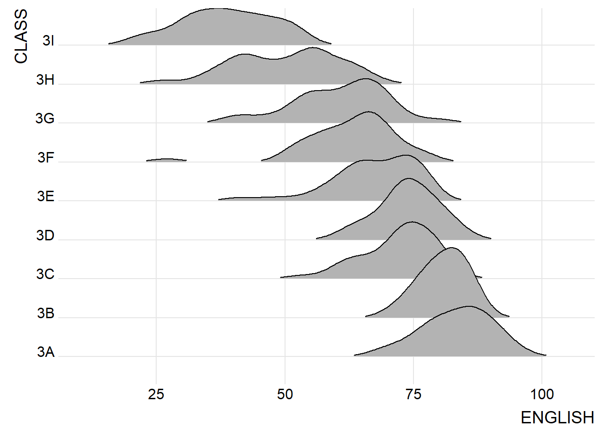
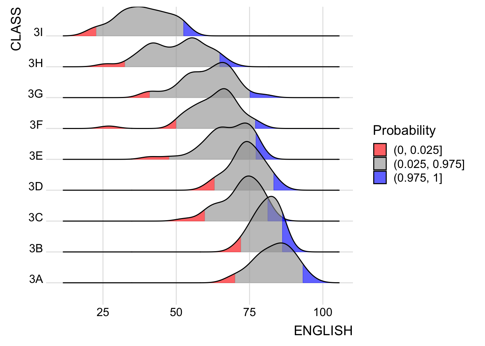

pacman::p_load(ggdist, ggridges, ggthemes,
colorspace, tidyverse, nord)Hands-on_Ex04a—Visualising Distribution
1 Learning Outcome
While traditional methods such as histograms, probability density curves, boxplots, and violin plots are commonly used for visualizing distributions—as introduced in Chapter 1—this analysis also incorporates more recent visualization techniques. Specifically, ridgeline plots and raincloud plots are employed in this study using ggplot2 and its extensions to provide a more nuanced understanding of population distribution patterns.
2 Getting Started
The following R packages will be used, they are:
ggridges, a ggplot2 extension specially designed for plotting ridgeline plots,ggdist, a ggplot2 extension spacially desgin for visualising distribution and uncertainty,tidyverse, a family of R packages to meet the modern data science and visual communication needs,ggthemes, a ggplot extension that provides the user additional themes, scales, and geoms for the ggplots package, andcolorspace, an R package provides a broad toolbox for selecting individual colors or color palettes, manipulating these colors, and employing them in various kinds of visualisations.nord, an R package, provides a collection of carefully curated color palettes inspired by the Nord theme, enabling consistent and visually appealing aesthetics for data visualisations across various plotting systems such as ggplot2.
Import The dataset for this hands-on exercise is imported into the R environment using the read_csv() function in the readr package and stored as the R object.
exam <- read_csv("data/Exam_data.csv")summary(exam) ID CLASS GENDER RACE
Length:322 Length:322 Length:322 Length:322
Class :character Class :character Class :character Class :character
Mode :character Mode :character Mode :character Mode :character
ENGLISH MATHS SCIENCE
Min. :21.00 Min. : 9.00 Min. :15.00
1st Qu.:59.00 1st Qu.:58.00 1st Qu.:49.25
Median :70.00 Median :74.00 Median :65.00
Mean :67.18 Mean :69.33 Mean :61.16
3rd Qu.:78.00 3rd Qu.:85.00 3rd Qu.:74.75
Max. :96.00 Max. :99.00 Max. :96.00 glimpse(exam)Rows: 322
Columns: 7
$ ID <chr> "Student321", "Student305", "Student289", "Student227", "Stude…
$ CLASS <chr> "3I", "3I", "3H", "3F", "3I", "3I", "3I", "3I", "3I", "3H", "3…
$ GENDER <chr> "Male", "Female", "Male", "Male", "Male", "Female", "Male", "M…
$ RACE <chr> "Malay", "Malay", "Chinese", "Chinese", "Malay", "Malay", "Chi…
$ ENGLISH <dbl> 21, 24, 26, 27, 27, 31, 31, 31, 33, 34, 34, 36, 36, 36, 37, 38…
$ MATHS <dbl> 9, 22, 16, 77, 11, 16, 21, 18, 19, 49, 39, 35, 23, 36, 49, 30,…
$ SCIENCE <dbl> 15, 16, 16, 31, 25, 16, 25, 27, 15, 37, 42, 22, 32, 36, 35, 45…head(exam,100)# A tibble: 100 × 7
ID CLASS GENDER RACE ENGLISH MATHS SCIENCE
<chr> <chr> <chr> <chr> <dbl> <dbl> <dbl>
1 Student321 3I Male Malay 21 9 15
2 Student305 3I Female Malay 24 22 16
3 Student289 3H Male Chinese 26 16 16
4 Student227 3F Male Chinese 27 77 31
5 Student318 3I Male Malay 27 11 25
6 Student306 3I Female Malay 31 16 16
7 Student313 3I Male Chinese 31 21 25
8 Student316 3I Male Malay 31 18 27
9 Student312 3I Male Malay 33 19 15
10 Student297 3H Male Indian 34 49 37
# ℹ 90 more rows3 Visualising Distribution with Ridgeline Plot
Ridgeline plot (sometimes called Joyplot) is a data visualisation technique for revealing the distribution of a numeric value for several groups. Distribution can be represented using histograms or density plots, all aligned to the same horizontal scale and presented with a slight overlap.
Figure below is a ridgelines plot showing the distribution of English score by class.

Note
Ridgeline plots make sense when the number of groups to represent is medium to high, and thus a classic window separation would take up too much space. Indeed, the fact that groups overlap each other allows for more efficient use of space. If you have fewer than 5 groups, using other distribution plots is probably better.
It works well when there is a clear pattern in the result, such as an obvious ranking in groups. Otherwise, groups tend to overlap excessively, resulting in a messy plot that does not provide meaningful insight.
3.1 Plotting ridgeline graph: ggridges method
There are several ways to plot ridgeline plot with R. In this section, we will plot ridgeline plot by using ggridges package.
ggridges package provides two main geom to plot gridgeline plots, they are: geom_ridgeline() and geom_density_ridges(). The former takes height values directly to draw the ridgelines, and the latter first estimates data densities and then draws those using ridgelines.
The ridgeline plot below is plotted by using geom_density_ridges().
ggplot(exam,
aes(x = ENGLISH,
y = CLASS)) +
geom_density_ridges(scale=3,
rel_min_height = 0.01,
bandwidth = 3.4,
fill = lighten("#7097BB",.3),
color = "white") +
scale_x_continuous(name = "English grades",
expand = c(0,0)) +
scale_y_discrete(name = NULL,
expand = expansion(add = c(0.2,2.6))) +
theme_ridges()3.2 Varying fill colors along the x axis
Sometimes we would like to have the area under a ridgeline not filled with a single solid color but rather with colors that vary in some form along the x axis. This effect can be achieved by using either geom_ridgeline_gradient() or geom_density_ridges_gradient(). Both geoms work just like geom_ridgeline() and geom_density_ridges(), except that they allow for varying fill colors. However, they do not allow for alpha transparency in the fill. For technical reasons, we can have changing fill colors or transparency but not both.
ggplot(exam,
aes(x = ENGLISH,
y = CLASS,
fill =stat(x)))+
geom_density_ridges_gradient(
scale = 3,
rel_min_height = 0.01
)+
scale_fill_viridis_c(name = "Temp.[F]",
option = "C") +
scale_x_continuous( name = "English grades",
expand = c(0,0)) +
scale_y_discrete(name = NULL,
expand = expansion(add= c(0.2,2.6)))+
theme_ridges()3.3 Mapping the probabilities directly onto colour
Beside providing additional geom objects to support the need to plot ridgeline plot, ggridges package also provides a stat function called stat_density_ridges() that replaces stat_density() of ggplot2.
Figure below is plotted by mapping the probabilities calculated by using stat(ecdf) which represent the empirical cumulative density function for the distribution of English score.
ggplot(exam,
aes(x = ENGLISH,
y = CLASS,
fill = 0.5 - abs(0.5-stat(ecdf)))) +
stat_density_ridges(geom = "density_ridges_gradient",
calc_ecdf = TRUE) +
scale_fill_viridis_c(name = "Tail probability",
direction = -1) +
theme_ridges()
Important
It is important include the argument calc_ecdf = TRUE in stat_density_ridges().
3.4 Ridgeline plots with quantile lines
By using geom_density_ridges_gradient(), we can colour the ridgeline plot by quantile, via the calculated stat(quantile) aesthetic as shown in the figure below.

ggplot(exam,
aes(x = ENGLISH,
y = CLASS,
fill = factor(stat(quantile)))) +
stat_density_ridges(
geom = "density_ridges_gradient",
calc_ecdf = TRUE,
quantiles = 4,
quantile_lines = TRUE) +
scale_fill_viridis_d(name = "Quartiles") +
theme_ridges()Instead of using number to define the quantiles, we can also specify quantiles by cut points such as 2.5% and 97.5% tails to colour the ridgeline plot as shown in the figure below.

ggplot(exam,
aes(x = ENGLISH,
y = CLASS,
fill = factor(stat(quantile))
)) +
stat_density_ridges(
geom = "density_ridges_gradient",
calc_ecdf = TRUE,
quantiles = c(0.025, 0.975)
) +
scale_fill_manual(
name = "Probability",
values = c("#FF0000A0", "#A0A0A0A0", "#0000FFA0"),
labels = c("(0, 0.025]", "(0.025, 0.975]", "(0.975, 1]")
) +
theme_ridges()4 Visualising Distribution with Raincloud Plot
Raincloud Plot is a data visualisation techniques that produces a half-density to a distribution plot. It gets the name because the density plot is in the shape of a “raincloud”. The raincloud (half-density) plot enhances the traditional box-plot by highlighting multiple modalities (an indicator that groups may exist). The boxplot does not show where densities are clustered, but the raincloud plot does!
In this section, we will create a raincloud plot to visualise the distribution of English score by race. It will be created by using functions provided by ggdist and ggplot2 packages.
4.1 Plotting a Half Eye graph
First, we will plot a Half-Eye graph by using stat_halfeye() of ggdist package.
This produces a Half Eye visualization, which is contains a half-density and a slab-interval.
ggplot(exam,
aes( x = RACE,
y= ENGLISH)) +
stat_halfeye(adjust = 0.5,
justification = -0.2,
.width = 0,
point_colour = NA)
tips
We remove the slab interval by setting .width = 0 and point_colour = NA.
4.2 Adding the boxplot with geom_boxplot()
Next, we will add the second geometry layer using geom_boxplot() of ggplot2. This produces a narrow boxplot. We reduce the width and adjust the opacity.
ggplot(exam,
aes( x = RACE,
y= ENGLISH)) +
stat_halfeye(adjust = 0.5,
justification = -0.2,
.width = 0,
point_colour = NA) +
geom_boxplot(width = .20,
outlier.shape = NA)4.3 Adding the Dot Plots with stat_dots()
Next, we will add the third geometry layer using stat_dots() of ggdist package. This produces a half-dotplot, which is similar to a histogram that indicates the number of samples (number of dots) in each bin. We select side = “left” to indicate we want it on the left-hand side.
ggplot(exam,
aes( x = RACE,
y= ENGLISH)) +
stat_halfeye(adjust = 0.5,
justification = -0.2,
.width = 0,
point_colour = NA) +
geom_boxplot(width = .20,
outlier.shape = NA) +
stat_dots(side = "left",
justification = 1.2,
binwidth = .5,
dotsize = 2)4.4 Finishing touch
Lastly, coord_flip() of ggplot2 package will be used to flip the raincloud chart horizontally to give it the raincloud appearance. At the same time, theme_economist() of ggthemes package is used to give the raincloud chart a professional publishing standard look.
ggplot(exam,
aes( x = RACE,
y= ENGLISH)) +
stat_halfeye(adjust = 0.5,
justification = -0.2,
.width = 0,
point_colour = NA) +
geom_boxplot(width = .20,
outlier.shape = NA) +
stat_dots(side = "left",
justification = 1.2,
binwidth = .5,
dotsize = 2) +
coord_flip() +
theme_economist()5 Exploration
5.1 Ridges with jittered points
ggplot(exam,
aes(x = ENGLISH,
y = RACE,
color= RACE,
fill= RACE)) +
theme_ridges()+
geom_density_ridges(jittered_points=TRUE,
aes(point_color=RACE),
alpha = 0.7,
scale = 0.8,
point_size = .5,
) +
scale_fill_discrete_qualitative('Set 3')+
scale_color_discrete_qualitative('Dark 3')+
labs(x = "English Score",
y = "",
title="Distribution of English Scores by Ethnic Group") +
theme(
legend.position = "none",
panel.grid.major.y = element_blank(),
panel.grid.minor = element_blank(),
axis.title.x = element_text(hjust = 1),
plot.title = element_text(face = "bold", size = 10),
)5.2 shaped jitters with geom_density_ridges()
ggplot(exam,
aes(x = ENGLISH,
y = RACE,
color=RACE,
fill=RACE
)) +
theme_ridges()+
geom_density_ridges(jittered_points=TRUE,
position='raincloud',
alpha = 0.7,
scale=1,
point_shape = '|',
point_size = 2,
) +
geom_boxplot(width = .20,
outlier.shape = NA) +
scale_color_nord('victory_bonds')+
scale_fill_nord('victory_bonds')+
scale_color_brewer(palette = "Set1") +
scale_fill_brewer(palette = "Set1") +
labs(x = "English Score",
y = "",
title="Distribution of English Scores by Ethnicity") +
theme(
legend.position = "none",
panel.grid.major.y = element_blank(),
panel.grid.minor = element_blank(),
axis.title.x = element_text(hjust = 1),
plot.title = element_text(face = "bold", size = 10),
)6 Reference
Claus O. Wilke Fundamentals of Data Visualization especially Chapter 6, 7, 8, 9 and 10.
Allen M, Poggiali D, Whitaker K et al. “Raincloud plots: a multi-platform tool for robust data. visualization” [version 2; peer review: 2 approved]. Welcome Open Res 2021, pp. 4:63.